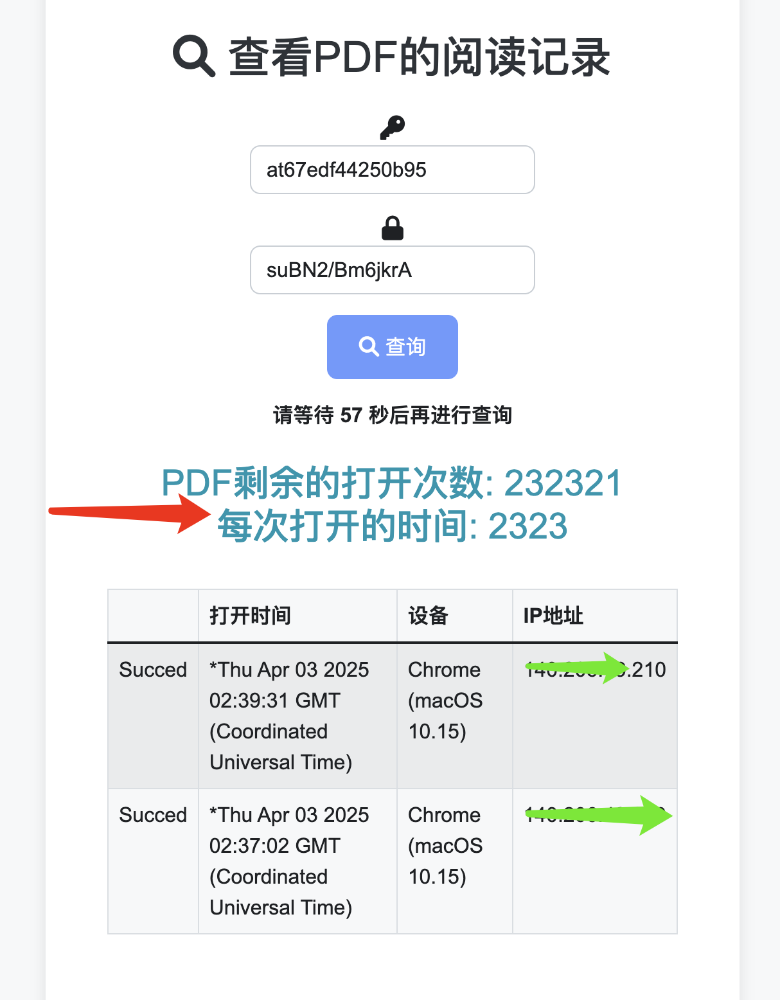
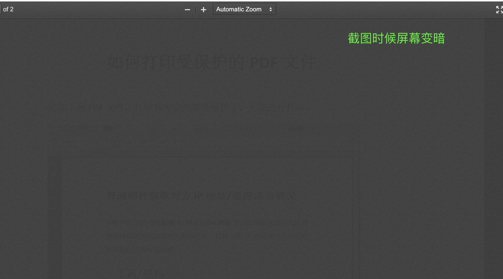
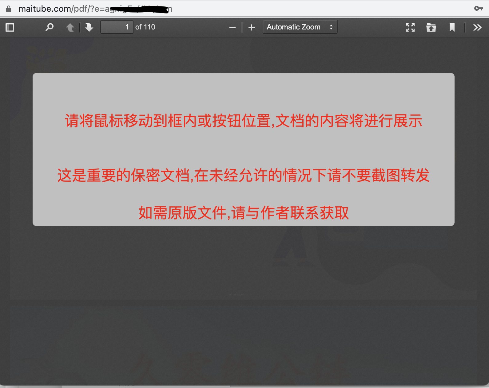

PDF竟然会泄露你的秘密？
🚨 震惊真相
每当你打开或下载一个PDF文件时，你可能正在无意中向文档创建者暴露大量个人信息：你的IP地址、精确位置、设备详情、阅读习惯，甚至你的身份信息都可能被精准追踪。这不是科幻小说，而是正在发生的现实。
⚠️ 隐私警告：
本文揭示追踪方法仅供教育和提高安全意识之用。在实施任何追踪技术时，请始终遵守隐私法律并获得适当授权。
流程图
交互式流程图
flowchart TD
A[开始] --> B[处理步骤]
B --> C[收集数据]
C --> D[分析结果]
D --> E[完成]
style A fill:#667eea,stroke:#764ba2,stroke-width:2px,color:#fff
style E fill:#48bb78,stroke:#38a169,stroke-width:2px,color:#fff
🔍 打开PDF时会暴露什么信息？
📊 你的数字指纹被完全暴露
- 精确IP地址 - 你的确切网络位置
- 地理位置 - 城市、地区、国家数据
- 设备信息 - 操作系统、浏览器、屏幕分辨率
- 网络详情 - ISP、连接类型、代理使用情况
- 时间戳数据 - 访问的准确时间和日期
- 阅读行为 - 停留时间、查看页面、交互模式
- 来源信息 - 你是如何找到这个文档的

🕵️ 隐藏的追踪机制揭秘
🎭 方法一：隐形网络信标
现代PDF追踪系统会嵌入肉眼不可见的1x1像素图片，当你打开文档时这些图片会从远程服务器加载。这些"网络信标"会立即将你的信息传输到追踪数据库。
工作原理：
- PDF包含隐藏的图像元素
- 你的PDF阅读器尝试加载这些图片
- 请求连同你的IP一起发送到追踪服务器
- 服务器记录你的所有信息
🔗 方法二：智能链接追踪
你得到的不是直接的PDF文件，而是看似正常但实际通过复杂追踪系统路由的链接。

追踪流程：
- 点击"PDF下载"链接
- 通过追踪基础设施重定向
- 你的数据在毫秒内被收集
- 最终提供实际的PDF文件
🌊 方法三：动态水印追踪
每个PDF版本都包含独特的、个性化的元素来专门识别你的身份。

个性化元素：
- 你的邮箱地址被隐形嵌入
- 与你身份绑定的唯一文档ID
- 为你生成链接的时间戳
- 文档元数据中的隐藏追踪码
😱 真实暴露案例
🎯 案例一：求职陷阱
小王从某公司网站下载了求职申请表PDF。她不知道的是，公司追踪到了：
- 她的家庭住址（通过IP地理定位）
- 她在凌晨2点查看（表明求职迫切）
- 她打开了7次（显示高度兴趣）
- 她的设备暗示失业状态（旧笔记本电脑，白天访问）
- 她的ISP表明来自低收入社区
结果： 公司利用这些情报提供了低于市场价的薪资，因为知道她的迫切程度。
🛠️ 专业追踪技术实施
📊 可以收集的情报信息
🛡️ 如何保护自己

🎯 为什么企业需要这些技术
⚖️ 法律与道德考量
🔮 PDF情报的未来
